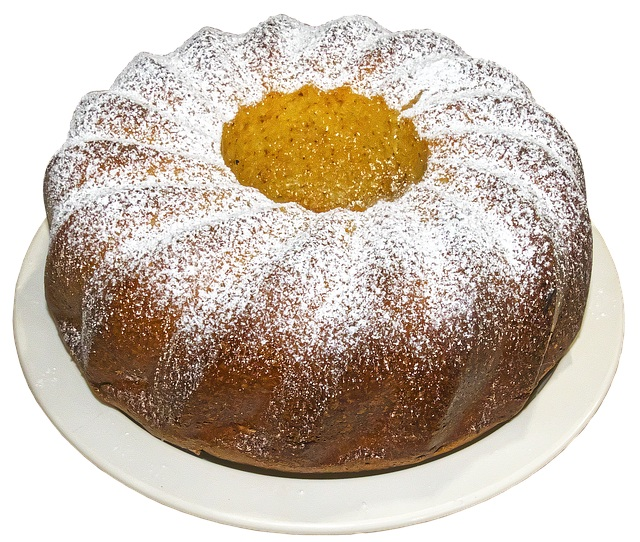

Vanilla Cake
Home

Vanilla cake
Ingredients :
175g (6oz) margarine or softened butter
175g (6oz) caster sugar
3 large eggs
175g (6oz) self-raising flour, sifted
1tsp baking powder
1tsp vanilla extract
pinch of salt
Steps
Heat the oven to 180°C (gas mark 4). Lightly grease an 18cm (7in) round cake tin
Put all the ingredients into a large mixing bowl and beat with a wooden spoon or a hand-held mixer for 1 minute, or until just combined
Pour or spoon the mixture into the tin, smooth the top and bake on the middle shelf of the oven for about 45-50 minutes.
Let the cake sit in the tin for 5 minutes, then gently run a knife around the edge and turn it out onto a wire rack to cool. Serve dusted with icing sugar.